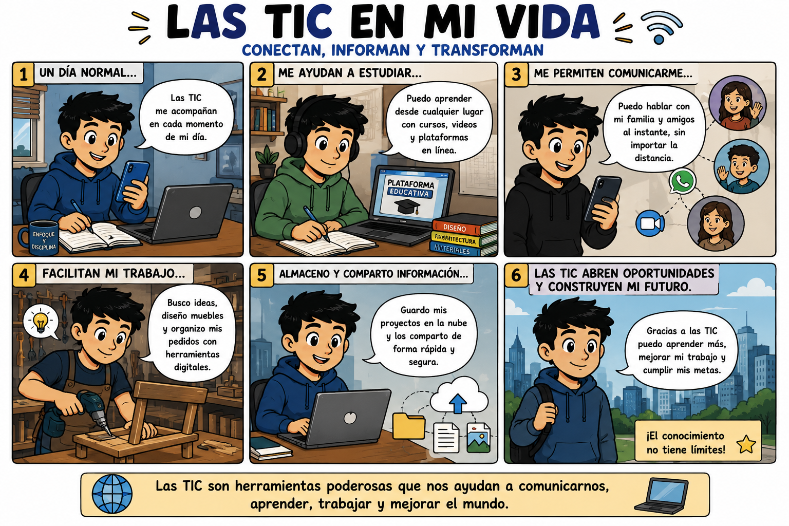
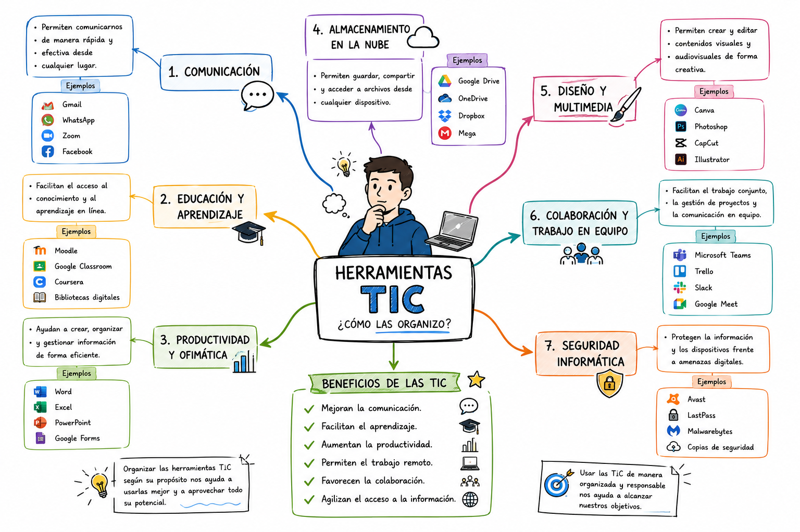

Publicado en 2026
Bienvenidos a mi espacio personal en la web. Este blog ha sido creado para compartir información relacionada con las Tecnologías de la Información y la Comunicación (TIC), así como algunos de los conocimientos adquiridos durante mi proceso de formación.
A través de este sitio web deseo mostrar la importancia que tienen las herramientas tecnológicas en la educación, el trabajo y la vida cotidiana.
Mi nombre es José Alejandro Bedoya. Soy una persona interesada en el aprendizaje continuo, la tecnología y el desarrollo de habilidades digitales que contribuyan a mi crecimiento personal y profesional.
Considero que las TIC son una herramienta fundamental para acceder a la información, fortalecer la comunicación y mejorar los procesos de aprendizaje.
Las Tecnologías de la Información y la Comunicación (TIC) son un conjunto de herramientas tecnológicas que permiten crear, almacenar, procesar y compartir información a través de medios digitales.
Actualmente las TIC hacen parte de nuestra vida diaria y facilitan múltiples actividades tanto en el ámbito académico como laboral.
La siguiente historieta representa la importancia de las Tecnologías de la Información y la Comunicación en diferentes actividades de la vida cotidiana.

Este mapa mental organiza los conceptos principales relacionados con las Tecnologías de la Información y la Comunicación, mostrando sus categorías, aplicaciones y beneficios.

Las Tecnologías de la Información y la Comunicación son fundamentales para el desarrollo académico, personal y profesional. Gracias a ellas es posible acceder al conocimiento, comunicarse de manera inmediata y aprovechar nuevas oportunidades de aprendizaje.
El uso adecuado de las TIC permite fortalecer las competencias digitales y adaptarse a los cambios tecnológicos que exige la sociedad actual.